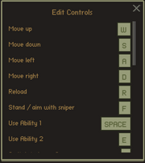

按键绑定
 按键绑定
按键绑定
按键绑定（也称为键绑定）是一种手动将按键绑定到游戏中键或按钮控制的操作的方法。在武器之间切换时，键绑定非常有用，因为几个默认键远离玩家的键盘手，到了不舒适的地步。
如何更改按键绑定
 转到 Slay.one 主菜单。单击菜单左上角的选项（齿轮按钮），然后单击“键盘操作方法”按钮。你应该会看到一个标签和按钮列表，其标题为“编辑快捷键”。例如，要想更改猎枪的键，先找到“猎枪”标签，然后单击其旁边的按钮。按钮上的字母应变为红色。然后按要绑定到猎枪的键。
 默认按键绑定
默认按键绑定
以下是 Slay.one 中的默认按键及其效果。请注意，这些键在 AZERTY 键盘上将保持不变，因此你必须手动绑定它们。要查看这些按键，点按屏幕左上角的选项（齿轮按钮），然后按控制按钮。
默认键盘设置：
移动：
W = 向上移动
S = 向下移动
A = 向左移动
D = 向右移动
右键 = 跳跃
武器：
1 = 激光枪
2 = 榴弹发射器
3 = 火焰喷射器
4 = 急射小机枪
5 = 喷火器
6 = 激光枪-R
7 = 自动制导火箭发射器
8 = 远程控制火箭发射器
9 = 狙击步枪
0 = 霰弹枪
N = 快速火箭发射器
M = 快速榴弹发射器
H = 治愈光波
注意：能量狙击枪没有默认热键，但你可以指定一个。
其它
左键单击 = 发射武器
Y = 发射次级能量步枪子弹（左键发射初级子弹）
R = 装载弹药（这会手动装载弹药，即使它没有空弹夹 - 例如，如果有一支带有 30 弹药的急射小机枪，可以按 R 装载弹药。）
F = 用狙击枪瞄准
Q = 使用第一个技能槽
E = 使用第二个技能槽
空格键 = 选择升级（这仅适用于感染和团队死亡竞赛游戏模式）
回车键 = 打开聊天栏。输入您的消息，然后再次按回车键发送。